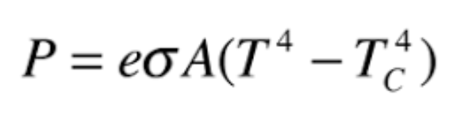
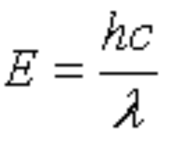
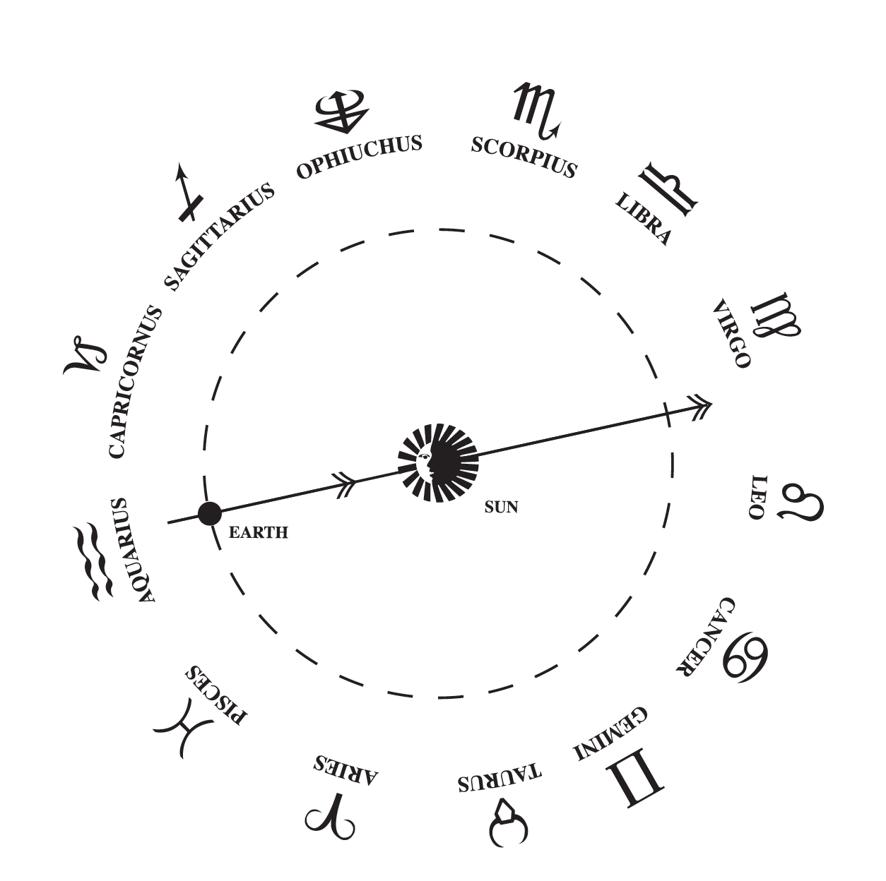

Hello I'm Julian Castro and I'm Destiny Howell and we are the co-creators of Cosmically Me. Currently we are fellows at the Marcy Lab School which is a year long college alternative that prepares us for a career in tech. As software engineering enthusiasts, we are pursuing our passions everyday by immersing ourselves in coding. Check us out on Github and LinkedIn.
We would like to express our sincere appreciation to our instructors Motun Bolumole, Ben Spector, and Carmen Salas who have been instrumental in the development of this website. Their guidance, expertise, and support have been invaluable to us throughout the whole process.
Inspiration
The wonders of our vast and complex universe is something we love to think about. For some people it's the beauty of the night sky, for others it’s the exploration of the unknown. It is this fascination that inspired us to create our website, we want to elicit the same feeling one felt when they first realized how small they are in this mysterious world.
We hope that you enjoyed our website and learned something new. If you did please be sure to share Cosmically Me with your friends and family, it is a joy to study the universe and we'd love to connect more people to it.
Finding Your Star
Declination and right ascension are two coordinates used in astronomy to locate celestial objects in the sky, such as stars, planets, and galaxies. Declination is measured in degrees above the equator, and right ascension is measured in time from the vernal equinox.
In order to find your birth star in the night sky you need both the declination and right ascension from your star’s wikipedia page. Also pay attention to your star’s magnitude, a star with a magnitude of 6.5 or less can be seen without a telescope.
Follow these tutorials if you have a telescope, or use an app to try to find your star.
The amount of infrared radiation emitted by the human body can be estimated using the Stefan-Boltzmann law, which relates the total energy radiated by a blackbody to its temperature. Although the human body is not a perfect blackbody, it is close enough for most purposes.

Hypothetically, a baby born on an empty field has a surface area of about 0.27 m2. With a body temperature of 305K (compared to ambient temperature), a skin emissivity of 0.98, and the boltzmann constant, we can find that a baby would generate about 106 watts of infrared radiation. Watts is a measurement of energy per second, and so we can rearrange Planck’s law using a peak wavelength of 10 micrometers to estimate that a baby would release 5.025 x 10 21 photons per second into the atmosphere.
Relative Motions
Consider that Earth is rotating at 1,000 mph. And that the Earth is also orbiting the Sun at 67,000 mph. And the Solar System is orbiting our galaxy at 515,000 mph. And finally, the Milky Way is moving away from all the other galaxies at 1.3 million mph. We are constantly moving at these combined relative velocities and yet we feel nothing due to gravity and inertia.
Earlier we introduced your timeline and how your light could escape Earth. Any light source would theoretically radiate light in a sphere, but considering your placement on Earth and the body’s abnormal shape, what you radiate won’t be shaped as uniformly. While considering all the relativistic motions we go through, we approximated your timeline using a perfect sphere and imagined your photons leaving Earth at the speed of light in every direction.
Distance vs. Scale
The timeline we created for you was sorted based on distance from Earth. This is just one way to explore the Universe. If you are also interested in seeing the Universe sorted by size, both big and small, we invite you to explore it through Scales of the Universe 2. Click here or try it out below.
Birth Star Accuracy
When building this website we tried to make your birth star as accurate as possible. Sometimes we were limited by physical gaps between stars or missing data that we could not control. It was also imperative that your star had a wikipedia page so we could give you more information. Manually checking every star could only do so much, so we apologize if your birth star is off by any amount of time. As of right now we can only give information on stars within a 100 light years, apologizes to any centenarians, but in the future we would like to transition over to a star database to pull more precise and accurate data for everybody.
On a related note, birth stars are commonly confused with Zodiacs. While both have a basis in astronomy, one’s Zodiac doesn't change through their lifetime but birth stars change yearly. The Babylonians picked the Zodiacs based on the constellations the sun appears to pass through in a given year. In actuality there are 13 Zodiacs, Ophiuchus is regarded as the forgotten zodiac because the Babylonians split their year into 12 parts, not 13.

Age of Starlight
The electromagnetic radiation emitted by a star was actually created in its core thousands of years ago. This dense interior is where nuclear fusion occurs. Fusion is when two light atoms bond together, or fuse, to make a heavier one. The total mass of the new atom is less than that of the two that formed it; the "missing" mass is given off as energy in photons, as described by Einstein's E=mc2 equation.
Fusion only occurs under intense heat and pressure, that's why photons can spend thousands of years bouncing around the inside of its star. It is only when it reaches the outer star that it’s finally emitted and begins to travel through space.